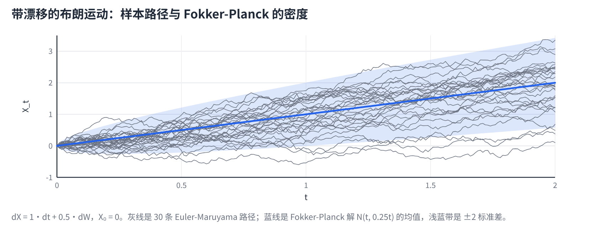
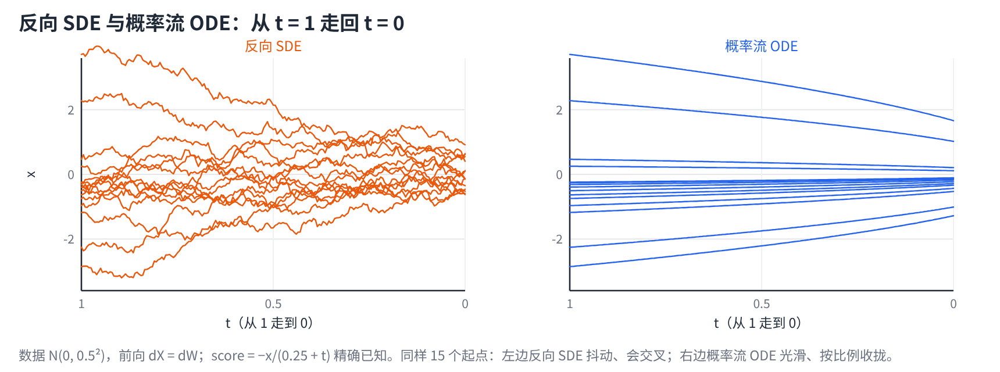
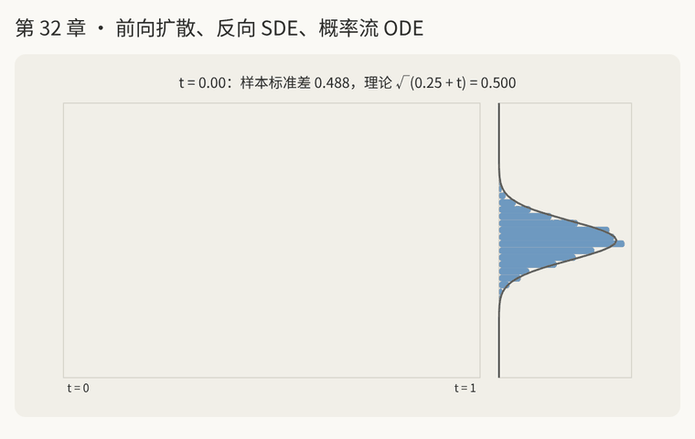

第 32 章 · 随机微积分：布朗运动、Itô 积分与 Itô 引理、Euler-Maruyama、Fokker-Planck、反向 SDE 与概率流 ODE
本地运行
git clone https://github.com/wikieden/math-and-eval-stats
cd math-and-eval-stats/code/notebooks
pip install jupyterlab torch numpy
jupyter lab ch32_stochastic_calculus.ipynb也可以下载后直接用 VS Code 打开 .ipynb 运行。需要 GPU 的章节在 Colab 里选「代码执行程序 → 更改运行时类型 → GPU」。
本章回答：为什么 (dW)² = dt？Itô 积分为什么一定要取左端点？Itô 引理比普通链式法则多出来的那一项是什么？SDE 怎么数值求解、误差多大？Fokker-Planck 方程描述什么？扩散模型的"反向 SDE"和"概率流 ODE"是怎么来的？
讲解日期：2026-11-25 · 上一章：第 31 章 微分几何与流形优化 · 下一章：第 33 章 最优传输
对应原文：Särkkä & Solin《Applied Stochastic Differential Equations》math-and-eval-stats/materials/text/books/sarkka-solin-applied-sde.txt（布朗运动 L1502–L1508、Euler-Maruyama L2231、§4.2 Itô 公式 L2572–L2618、§5.2 Fokker-Planck-Kolmogorov 方程 L3308–L3327）；Score SDEdiffusion-models/materials/text/papers/score-sde-2011.13456.txt（反向 SDE 式 (6) L249–L252、概率流 ODE 式 (13) L448–L450）
本章缩写：SDE = Stochastic Differential Equation（随机微分方程）；W_t = 布朗运动（维纳过程）；EM = Euler-Maruyama（两位数学家的姓：SDE 的欧拉法）；FP = Fokker-Planck（两位物理学家的姓）；GBM = Geometric Brownian Motion（几何布朗运动）；f、g = 漂移系数、扩散系数；score = ∇log p_t；PF ODE = probability flow ODE（概率流常微分方程）。全部缩写见 附录 · 缩写与术语表
讲解
第一步：布朗运动：(dW)² = dt（2026-11-25）
类比：醉汉走路。 每一小步方向随机、步长按 √dt 缩放；走 t 时间后离起点的方差是 t（Särkkä & Solin L1502–L1508）。
布朗运动 W_t：W₀ = 0；增量独立；\(W_{t+h} - W_t \sim \mathcal N(0, h)\)。增量的平方 \((\Delta W)^2\) 的期望是 h，方差 2h²，加起来
例子（[0, 1] 切成 n 段，2000 条路径）：
| n | Σ(ΔW)² 的均值 | 标准差 |
|---|---|---|
| 10 | 0.9921 | 0.4435 |
| 100 | 1.0024 | 0.1377 |
| 10000 | 0.9995 | 0.0144 |
切得越细，Σ(ΔW)² 越确定地等于 t：这就是速记法 (dW)² = dt 的意思。普通光滑函数的 Σ(Δx)² → 0；布朗运动太"毛"了，它的二次变差不为 0。
一句话：布朗运动的增量 ~ N(0, dt)，平方加起来确定地等于时间，(dW)² = dt 是一切 Itô 计算的起点。
第二步：Itô 积分：为什么取左端点（2026-11-25）
\(\int_0^TW\,dW\) 按 Riemann 和算，取左端点还是中点结果不同（普通积分不会这样，这里因为第一步的二次变差不为 0）：
| 取法 | 极限 | 期望 |
|---|---|---|
| 左端点 \(\sum W_k\Delta W_k\)（Itô） | \((W_T^2 - T)/2\) | 0 |
| 中点 \(\sum\frac{W_k + W_{k+1}}2\Delta W_k\)（Stratonovich） | \(W_T^2/2\) | T/2 |
例子（n = 1000，4000 条路径，T = 1）：左端点和的均值 0.0167（理论 0），中点和的均值 0.5165（理论 0.5）；左端点和与 (W_T² − T)/2 的最大差 0.0931（只差离散化误差）。
为什么取左端点：左端点 W_k 只用到"现在之前"的信息，不偷看未来（第 29 章的 σ-代数 F_t）。这样 Itô 积分的期望是 0（是鞅），对应"用当前状态决定下一步"的物理和算法过程。
一句话：Itô 积分取左端点、不偷看未来，期望为 0；代价是链式法则要改（下一步）。
第三步：Itô 引理：链式法则多一项（2026-11-25）
对 \(dX = f\,dt + g\,dW\) 和光滑函数 φ，泰勒展开到二阶，用 (dW)² = dt、dt·dW = 0、(dt)² = 0（Särkkä & Solin §4.2，L2572–L2618）：
多出来的 ½φ″g² dt 就是普通链式法则没有的项。
例子 1：\(E[e^{W_1}]\)。用普通链式法则会以为 \(e^W\) 的期望和 \(e^{E[W]} = 1\) 一样；Itô 引理给 \(d e^W = e^W dW + \frac12e^Wdt\)，期望按 e^{t/2} 增长。40 万样本：1.6508（理论 e^{0.5} = 1.6487）。
例子 2：几何布朗运动 \(dX = \mu X\,dt + \sigma X\,dW\)。对 log X 用 Itô 引理，得精确解 \(X_T = \exp((\mu - \sigma^2/2)T + \sigma W_T)\)（中间那个 −σ²/2 就是多出来的项）。拿它检验 Euler-Maruyama（\(X \leftarrow X + fh + g\Delta W\)，Särkkä & Solin L2231）：
| 步数 | 10 | 100 | 1000 |
|---|---|---|---|
| 强误差 E|X^EM − X| | 0.1807 | 0.0618 | 0.0194 |
步数 ×100，误差约 ÷10：EM 的强收敛阶是 1/2（ODE 的欧拉法是 1 阶，第 22 章）。
一句话：Itô 引理 = 链式法则 + ½φ″g² dt；EM 是 SDE 的欧拉法，强收敛阶只有 1/2。
第四步：Fokker-Planck：密度怎么随时间流动（2026-11-25）
类比：一滴墨水在流动的水里：漂移项把它整体冲走，扩散项把它化开。
SDE 描述单个粒子，Fokker-Planck 方程描述整个密度（Särkkä & Solin §5.2，L3308–L3327）：
没有扩散（g = 0）时就是第 17 章的连续性方程。
例子（dX = 1·dt + 0.5·dW，X₀ = 0，跑到 t = 2）：FP 方程的解是 N(μt, σ²t) = N(2, 0.5)；2 万条 EM 路径的均值 2.0034、方差 0.4984。

图 32-1 · 灰线是 dX = dt + 0.5dW 的 30 条样本路径；蓝色是 Fokker-Planck 解 N(t, 0.25t) 在 t = 0.5、1、2 处的 ±2σ 范围一句话：SDE 管粒子，Fokker-Planck 管密度：漂移搬运、扩散抹开；去掉扩散就是连续性方程。
第五步：反向 SDE 与概率流 ODE（2026-11-25）
反向 SDE（Anderson 1982，Score SDE 式 (6)，L249–L252）：前向 \(dx = f\,dt + g\,dW\) 的时间反演是
（时间从 T 往 0 走）。只要知道每个时刻的 score ∇log p_t，就能把噪声"倒放"回数据：这就是扩散模型的采样（第 27 章的 ε 预测就是 score 预测）。
概率流 ODE（式 (13)，L448–L450）：
没有噪声，但每个时刻的边际分布和 SDE 一样（它的 Fokker-Planck 方程和 SDE 的相同）。DDIM、DPM-Solver 解的就是它。
例子（数据 N(0, 0.5²)，前向 dX = dW 跑到 T = 1，于是 p_t = N(0, 0.25 + t)、score = −x/(0.25 + t) 精确已知；从 N(0, 1.25) 往回走 500 步）：
| 方法 | t = 0 时的样本标准差（目标 0.5） |
|---|---|
| 反向 SDE | 0.5057 |
| 概率流 ODE | 0.5040 |

图 32-2 · 从 t = 1 往回走到 0：左边反向 SDE 的轨迹抖动、会交叉；右边概率流 ODE 的轨迹光滑、互不交叉；两边终点的分布相同场景代码：Score SDE 式的反向采样一步（PyTorch 写法，示意结构；本书环境没装 torch，没跑过）：
for t in torch.linspace(T, 0, steps)[:-1]:
s = score_net(x, t) # ≈ ∇log p_t(x)，等价于 −ε_θ/√(1 − ᾱ)
x = x + (g(t) ** 2 * s - f(x, t)) * dt # 反向 SDE 的漂移（往回走）
x = x + g(t) * math.sqrt(dt) * torch.randn_like(x) # 概率流 ODE 去掉这一行、漂移里的 g² 乘 ½
一句话：有了 score，前向加噪的 SDE 可以倒着跑（反向 SDE），也可以换成没有噪声、边际相同的概率流 ODE；扩散模型采样就是二选一。
动画演示：粒子与密度

可交互版：animations/32-stochastic-calculus.html（下拉切换"前向扩散 / 反向 SDE / 概率流 ODE"；滑块调时间 t）。
怎么看：
- 前向扩散：一群粒子从 N(0, 0.5²) 出发随机游走，右边的直方图越来越宽（第一、四步）；
- 反向 SDE：从宽的分布往回走，粒子一边抖一边收拢；
- 概率流 ODE：同样的起点，粒子沿光滑曲线收拢，最后直方图和反向 SDE 一样（第五步）。
练习与作答记录
题 1（第一步）：把 [0, T] 切成 n 段，Σ|ΔW|（一阶变差，“路径总长度”）的期望是多少？n → ∞ 时会怎样？这说明布朗路径有什么性质？（用 Z ~ N(0, 1) 时 E|Z| = √(2/π)）
作答：（待作答）
题 2（第三步）：用 Itô 引理求 d(W_t²)，并由此说明 E[W_t²] = t。
作答：（待作答）
题 3（第五步）：前向 dX = dW，数据是 N(0, 1)。写出 p_t、score 和概率流 ODE；从 t = T 的 x_T 出发，概率流 ODE 的解析解是什么？
作答：（待作答）
口诀
醉汉走路方差等于时间，(dW)² 等于 dt；
Itô 取左端不偷看，期望为零；
链式法则多半个二阶导乘 g²；EM 强阶只一半；
SDE 管粒子，FP 管密度，漂移搬、扩散抹；
有了 score 能倒放：反向 SDE 带噪声，概率流 ODE 不带。
本章复习卡片
ST108（布朗运动与二次变差）、ST109（Itô 积分与 Itô 引理；EM 的收敛阶）、ST110（Fokker-Planck 方程）、ST111（反向 SDE 与概率流 ODE）。练习做完后，按答错、卡住的地方补上。
附录 · 延伸阅读
留给以后深入学习用，不影响本章主线。★ 是建议先读的。
推荐阅读
| 读什么 | 读哪里 | 读它为了什么 |
|---|---|---|
| ★ Särkkä & Solin | 第 2–4 章（布朗运动、Itô 积分、§4.2 Itô 公式 L2572） | 本章前三步 |
| ★ Särkkä & Solin | 第 5 章（§5.2 Fokker-Planck L3308）、第 8 章（数值解） | 密度方程与 SDE 数值方法 |
| ★ Score SDE（Song 2021） | §2–3（式 (6) L251）、§4.3（式 (13) L448） | 反向 SDE、概率流 ODE |
| 《从零读懂扩散模型》第 10 章 SDE | 全章 | 扩散模型的 SDE 统一视角 |
| 第 17 章 生成模型的数学 | 第五步 | 连续性方程 |
数学原理
- Itô 乘法表：dt·dt = 0，dt·dW = 0，dW·dW = dt。
- Itô 等距：\(\mathbb E[(\int g\,dW)^2] = \mathbb E\int g^2dt\)。
- EM 的收敛阶：强阶（路径误差）1/2，弱阶（期望误差）1；Milstein 格式加一项 ½gg′((ΔW)² − h) 可把强阶提到 1。
- 反向 SDE 的来源：对前向 FP 方程做时间反演，把扩散项拆成"往回的扩散 + 由 score 给出的漂移修正"。
- 概率流 ODE 的边际相同：把 FP 方程里的 ½g²∂²p 写成 −∂(½g²p∇log p)，扩散项就变成了漂移项。
公式清单
| 公式 | 意思 |
|---|---|
| \(\sum(\Delta W)^2 \to t\) | 二次变差 |
| \(\int_0^TW\,dW = (W_T^2 - T)/2\) | Itô 积分的例子 |
| \(d\varphi = \varphi'dX + \frac12\varphi''g^2dt\) | Itô 引理 |
| \(\partial_tp = -\partial_x(fp) + \frac12\partial_x^2(g^2p)\) | Fokker-Planck |
| \(dx = [f - g^2\nabla\log p_t]dt + g\,d\bar W\) | 反向 SDE |
| \(dx/dt = f - \frac12g^2\nabla\log p_t\) | 概率流 ODE |
代码对照：把本章的数字用代码算一遍
代码在仓库本地
math-and-eval-stats/solutions/chapter-code/ch32_stochastic_calculus.py，配套测试tests/test_ch32.py：
bash cd math-and-eval-stats/solutions/chapter-code uv run python ch32_stochastic_calculus.py uv run pytest tests/test_ch32.py
讲义 ↔ 代码：
| 讲义 | 公式 | 写法 | 跑出来 |
|---|---|---|---|
| 第一步 二次变差 | Σ(ΔW)² | quadratic_variation(10000) |
0.9995 ± 0.0144 |
| 第二步 Itô vs Strat | 左端 / 中点 | ito_vs_strat() |
0.0167、0.5165 |
| 第三步 Itô 引理 | E[e^W] | exp_w_mean() |
1.6508 |
| 第三步 EM | 强误差 | gbm_strong_error(1000) |
0.0194 |
| 第四步 FP | N(μt, σ²t) | drift_bm() |
2.0034、0.4984 |
| 第五步 反向 | SDE / ODE | reverse("sde")、reverse("ode") |
0.5057、0.5040 |
关键几行：
ito = (w[:, :-1] * dw).sum(axis=1) # 左端点和
x = x + mu * x * h + sigma * x * dw[:, k] # Euler-Maruyama
exact = np.exp((mu - sigma ** 2 / 2) * t + sigma * dw.sum(axis=1)) # 同一条布朗路径的精确解
x = x + sc * h + rng.normal(0, np.sqrt(h), reps) # 反向 SDE 往回走一步（f = 0、g = 1）
代码里才看得到的 3 件事：
- 强误差要用同一条布朗路径：EM 和精确解都用同一组
dw，比较的是"同一条路径上"的差；换了随机数就只能比分布（弱误差）。 - 往回走时 dt 取正数：代码让 k 从 n 递减、步长 h > 0，所以反向 SDE 的漂移写成
+ sc * h（前向 f = 0，−g²·score 乘 −dt 变正号）。 - Itô 和 Stratonovich 的差正好是 ½Σ(ΔW)²：中点和 − 左端点和 = ½Σ(ΔW_k)²，由第一步知道它 → T/2。
自己改一改（不影响练习答案）：
- 给
gbm_strong_error加 Milstein 修正项 ½σ²x((ΔW)² − h)，看强误差的收敛阶变成多少。 - 把
reverse的步数从 500 降到 5，反向 SDE 和概率流 ODE 哪个偏得多？